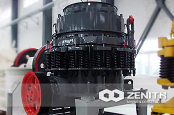

S Series Cone Crusher
S series cone crusher is designed on the basis of using foreign advanced technology research and development of high frequency, optimized chamber type and reasonable stroke in the integration of modern high-performance crusher, with reliable structure, high crushing efficiency, convenient adjustment, economic use, etc.S series cone crusher has been widely used in metal and non-metallic mineral, cement, construction, metallurgy, transportation, sand aggregate production, especially suitable for iron ore, gold ore, non-ferrous metal ore, granite, basalt, diabase and quartzite, broken hard, medium hard ores and rocks.
S Series Cone Crusher Features
- High performance: by cavity type optimization design and the reasonable combination of speed and stroke, which makes the model under the condition of the same cone diameter work most.Therefore, compared with the same type of spring cone crusher, with higher performance and production capacity.
- The grain size of products: laminating crushing principle, make the product obviously increase the proportion of the cube, decrease needle flake stone, graded more uniform.
- Good stability: when there is iron and other things not broken into the machine, iron protection device will automatically be released, then automatic reset.Iron protection has a fixed discharging mouth return point, miscellaneous iron after crushing cavity, can quickly restore original discharging mouth.
- Clear convenient cavity: if the spring cone crusher downtime load condition, hydraulic system can rapidly clear the broken cavity, greatly reducing the downtime.
- High reliability: the large diameter spindle, ChongXingHua main frame, and independent of thin oil lubrication system of automatic control system, ensure the equipment durable, reliable operation.
- Easy maintenance easy operation: all parts can be from the top or side tear open outfit, thus using the cone and cone assembly are easy.Bronze sliding bearing in high impact vibration environment can maintain excellent performance, and more economic than rolling bearing, maintenance more convenient.
- Widely used: the characteristics of the CS series high spring cone crusher is to play maximum performance in order to apply to all kinds of crusher crushing process: from coarse crushing to finely, from stationary crushing to the mobile crushing station; 8. The body lubrication: multipoint control independent thin oil lubrication system, double protection model can ensure that the bearing lubrication, and can realize the automatic safety protection.
Working Principle of S Series Cone Crusher
When S series Cone is at working, the belt, a big belt wheel, transmission shaft, bevel gear and bevel gear drive the eccentric sleeve to rotate under the force of motor. The crushing cone axis is forced to rotating swing under the eccentric sleeve to make the broken wall surface close to or depart from rolling mortar wall so that the materials are repeatedly subjected to impact, extrusion and bending and crushing in the fixed cone and movable cone crushing cavity. After repeated extrusion, impact and bending, materials are crushed to the required size, and discharged from the lower.